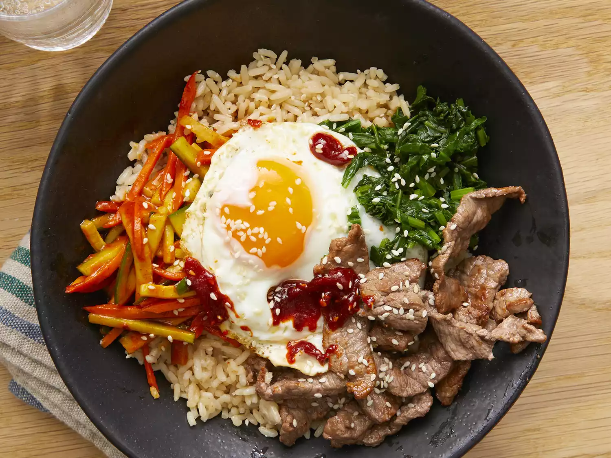

How to Make Bibimbap (Korean Rice With Mixed Vegetables)
What is Bibimbap?
Korean bibimbap is among the favored foods in Korean cuisine. Bibimbap is a popular meal consisting of white rice topped with vegetables, beef, a whole egg, and red chili pepper paste (called gochujang).
Bibimbap ingredients
Use the following ingredients for your amazing Bibimbap:
Thinly-sliced Beef Top Round Steak
Chicken Large Eggs
Cooked White Rice
English Cucumber
Spinach
Olive Oil
Minced Garlic
Say Sauce
Directions
To make your Bibimbap (Korean Rice With Mixed Vegetables), follow these two simple steps:
Step 1
In a bowl, stir together cucumber pieces and gochujang paste.Step 2
Bring about 2 cups water to a boil in a large nonstick skillet and stir in spinach; cook until bright green and wilted, 2 to 3 minutes. Drain spinach and squeeze out as much moisture as possible; set spinach aside in a bowl and stir in soy sauce.Step 3
Heat 1 teaspoon olive oil in a large nonstick skillet; cook and stir carrots until softened, about 3 minutes. Stir in garlic and cook just until fragrant, about 1 minute. Stir in cucumber mixture; sprinkle with red pepper flakes. Set mixture aside in a bowl.Step 4
Brown beef in a clean nonstick skillet over medium heat, 4 - 5 minutes per side.Step 5
Heat remaining 1 teaspoon olive oil in another nonstick skillet over medium-low heat. Fry eggs just on one side until yolks are runny, but whites are firm, 3 to 4 minutes.Step 6
Divide cooked rice into 4 large serving bowls; top with spinach mixture, a few pieces of beef, and cucumber mixture. Place 1 egg on top of each serving. Drizzle each bowl with 1 teaspoon sesame oil, a sprinkle of sesame seeds, and a small amount of gochujang paste if desired.
Return to top
Return to main page